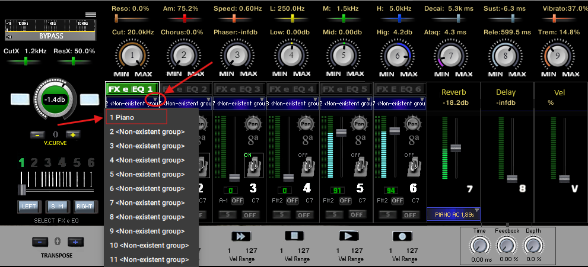

Importando Samples
Abra o Toca Sample e em cima a esquerda clique na  em seguida clique em Group Editor e Mapping Editor,destacado na imagem a baixo
em seguida clique em Group Editor e Mapping Editor,destacado na imagem a baixo

Clique em "Edit" em seguida em "Import group" conforme ilustra a figura abaixo.
 Agora abrirá a tela para importar o sample, selecione o local onde ele foi salvo, de um clique nele e outro em abrir, conforme figura abaixo.
Agora abrirá a tela para importar o sample, selecione o local onde ele foi salvo, de um clique nele e outro em abrir, conforme figura abaixo.

Agora com o sample importado, é hora de arrumar a casa, começamos renomeando o sample (evite nomes extensos pois este vai aparecer no menu e quando selecionado no painel). Delete Empty grupo (ele é um grupo vazio) clicando nele com botão direito do mouse e selecionando "Delete Selected Group(s)"
Se tudo correr bem, renomeado para Piano, estará como a imagem abaixo, e agora clicamos na e Voltamos para tela principal do Toca Sample.

Clique na "!" no canto direito superior do Kontakt, conforme figura abaixo para atualizar" .

Clique no primeiro menu em azul conforme seta da direita na figura abaixo, em seguida selecione o Piano (o mesmo que foi renomeado) .
Ligue o canal em ON Aumente o volume e se tudo correr bem seu sample já deve estar tocando.

Em media de cada 15 samples que importo, 1 da algum problema, mas sempre tem como resolver. Vou deixar as soluções junto com as dicas 1ª, Segure a tecla control e va clicando em todos os controles isso faz eles voltarem para posição inicial. 2º verifique se os controles "Dec" e "Sus" estão atuando e no máximo, caso não esteja atuando clique na no Grupo editor de um clique no instrumento que vc acabou de importar para seleciona-lo, em seguida dessa até Amplifier, caso não mostre Envelope(ADSR) e Velocity, clique em "Mod" , é esperado uma tela com a figura abaixo com apenas um Envelope(ADSR) e um Velocity

Caso apareça mais de um, como na figura abaixo sera necessário pegar o sample e importar para ou novo instrumento vazio no Kontakt e excluir os ADSR e levar de volta para o Toca Sample, existem outras formas de resolve ,mas acho que essa é a mais simples de entender

Também pode acontecer de o som ficar preso, so tocando uma nota de cada vez, pra resolver é simples: coloque 128 no lugar de 1 em "Voices" conforme ilustra figura abaixo